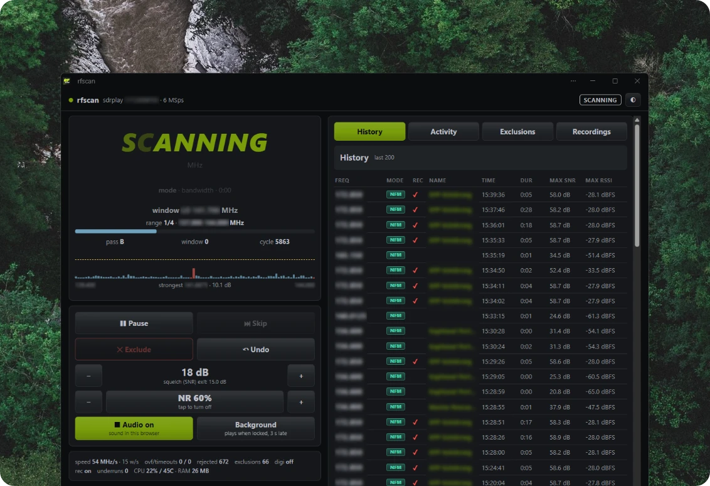
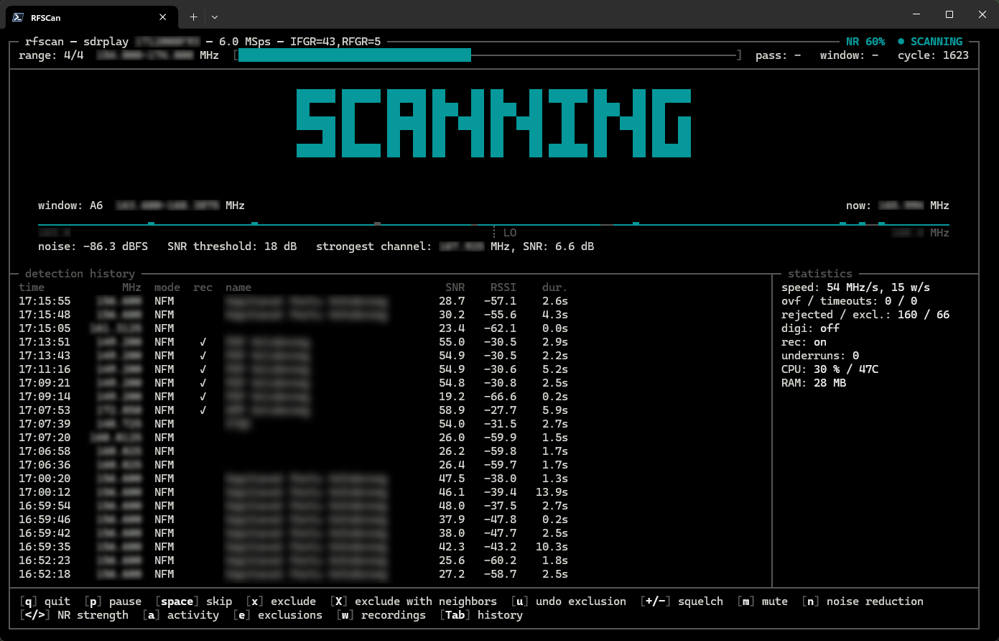

rfscan is a fast radio scanner for SDR receivers. It sweeps frequency ranges in wide FFT windows, stops on a signal, plays it (AM, narrowband FM and digital voice) and goes on scanning when the transmission ends. Runs in a terminal, and a web GUI puts it on your phone.

A classic scanner checks one channel at a time. rfscan checks a whole window of channels with every retune, and only stops for real signals.
One tuner setting covers about 80% of the sample rate, e.g. 4.8 MHz at 6 MSps. An FFT measures every channel in the window at once: about 220 MHz per second on an Airspy Mini.
The noise floor is measured in every window, and a channel a set number of dB above it stops the scanner, whatever the gain or the antenna.
Every hit is confirmed at a different tuner frequency, so images and spurs of the receiver are rejected, and the DC spike never falls on a channel.
AM and narrowband FM, a 300-3000 Hz voice filter, AGC so stations sound equally loud, RNNoise speech noise reduction and a limiter.
DMR, P25, D-STAR, YSF, NXDN and more are played through DSD-FME.
A text interface, a plain console mode for logs and scripts, and a web GUI to watch, hear and control the scanner from a phone.
A channel file names frequencies and sets their modes, one key excludes interference, and an activity log counts how long each frequency was on the air.
Frequency limits, sample rates, gain stages and sample format come from the device. Tested with Airspy, RTL-SDR and SDRplay.
On a Raspberry Pi 4 the scan is as fast as on a PC: the speed is set by the receiver, not the computer. A small always-on scanner with a phone as its screen.
rfscan runs as a server on a Raspberry Pi with the receiver. The web GUI is its client: a browser on a PC or a phone shows the scanner, plays its audio and controls it.
Besides the web GUI, rfscan has a text interface. Start it with --tui to follow the window being scanned, the noise floor, the detection history and the statistics, and to control the scanner from the keyboard. It also plays the audio on the local sound card, so one computer with a receiver is all you need.

rfscan stops on a DMR signal from a hotspot and hands it to DSD-FME. Turn the sound on.
Measured scan speeds with the settings that worked. Other SoapySDR receivers should work without code changes.
| Receiver | Windows 11 PC | Raspberry Pi 4 | Settings |
|---|---|---|---|
| Airspy Mini | 220 MHz/s · 6 MSps | 225 MHz/s · 6 MSps | --gain "agc=true,VGA=7" --settle 20 |
| SDRplay RSP1A | 90 MHz/s · 8 MSps | 67 MHz/s · 6 MSps | --sample-rate 6M --gain "IFGR=43,RFGR=4" --settle 63 |
| RTL-SDR (R828D) | 20 MHz/s · 2.4 MSps | 28 MHz/s · 2.4 MSps | --sample-rate 2.4M --gain "TUNER=28" --stream-args "bufflen=16384,buffers=64" --settle 63 |
Raspberry Pi 4, 4 GB, Debian 13 64-bit. Reports about other receivers are welcome.
On Windows, download the zip from the releases page: rfscan.exe comes with SoapySDR and the receiver drivers. On Linux and the Raspberry Pi, build it from source with Cargo.
Lists the devices with their gain stages and settings.
$ rfscan --list-devices
How long the receiver needs after a retune. Needs a strong constant signal in the range.
$ rfscan --calibrate --gain "..." --scan-range 144M-146M
Writes a config file with all options commented out: set your gain, settle time and sample rate once.
$ rfscan --gen-conf
Frequency ranges or single channels, with a web page for the phone if you like.
$ rfscan --scan-range 144M-146M $ rfscan --scan-range 118M-137M:am $ rfscan --web-gui 0.0.0.0:8080
Gain is the most important setting, and rfscan cannot guess it. The full guide is in README and DOC.md.
A ready-to-run Windows build with SoapySDR and the drivers, or the source for Linux and the Raspberry Pi.